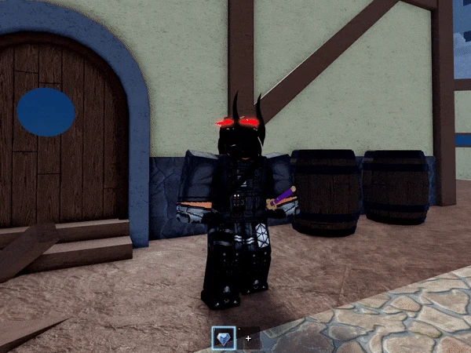
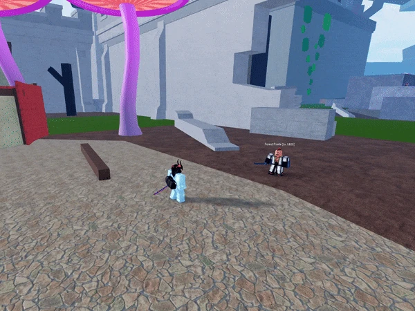

HOME
HOME

The user's skin transforms into diamond and radiates shiny halos. This gives a 25% defense buff. (Said in passive)
The user tackles a nearby NPC or player. If the tackled enemy hits a surface, it creates a crater. The longer the user holds this move, the farther they will be launched. This move is similar to Combat's Quick Tackle.

The user fires numerous shards from their hands. The amount of shards fired depends on how long the key is held for. This move is similar to Ice's Ice Spears but it fires a larger number of projectiles.

The user releases a large AOE blast of light, which deals heavy damage whilst simultaneously blinding nearby enemies in 3 seconds.
